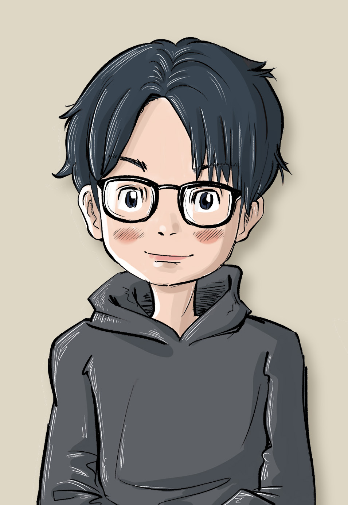

About
Hi, I'm Masaaki Tsukioka, working as Better by Design.
A freelance illustrator, character designer and graphic designer based in Tokyo, Japan.
About
A freelance illustrator, character designer and graphic designer based in Tokyo, Japan.

My background is in advertising design. I created self-initiated campaign concepts for brands such as Shiseido, Toyota and Misawa Homes as entries for Japanese advertising awards. My concept for Shiseido's MAQuillAGE received an Award of Excellence at the 2006 Mainichi Advertising Design Awards, and my Misawa Homes concept was a finalist at the same awards.
My client work spans characters and graphics: a founder character for Insta360 Japan, a channel character for a Japanese YouTuber, and characters for a Japanese company's app and videos. On the graphic side, I designed the poster and logo for a lecture by art director Kaoru Kasai, a magazine advertisement for Toyo Bijutsu Gakko published in the design magazine Design Note, a pop-up greeting card for Wacoal's maternity floor at Isetan Shinjuku, and logos for the café Kissa Resto, the Tobi Festival and TDG's 50th anniversary. I also create and sell my own LINE sticker set, Nekojama.
Everything I make starts from one habit: seeing one thing as another. A kanji becomes a wrestler, an eraser becomes a car. I believe a good character starts with understanding who they are, so before I draw I ask about personality, world and audience, then turn those answers into visuals that stay consistent across every use.
I work with clients worldwide entirely by email, in English. Every decision stays in writing, and time zones are never a problem. You get clear updates, sketches to choose from, and files that are ready to use.
Advertising concepts shown for Shiseido, Toyota, Misawa Homes and Isetan were self-initiated entries for advertising awards and were not commissioned by those brands.
Tokyo, Japan (JST, UTC+9). Working with clients worldwide by email.
© 2026 Masaaki Tsukioka · Better by Design · Tokyo, Japan